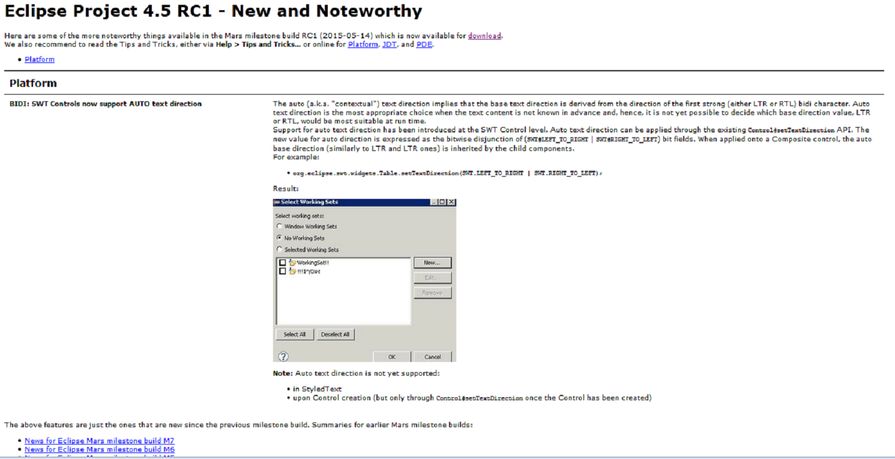

Here are some of the more noteworthy things available in the Mars milestone build RC1 (2015-05-14)
which is now available for download.
We also recommend to read the Tips and Tricks, either via Help > Tips and Tricks... or online for
Platform,
JDT, and
PDE.
| Platform | |
| BIDI: SWT Controls now support AUTO text direction |
The auto (a.k.a. "contextual") text direction implies that the base text direction is derived from the direction
of the first strong (either LTR or RTL) bidi character. Auto text direction is the most appropriate choice when
the text content is not known in advance and, hence, it is not yet possible to decide which base direction value,
LTR or RTL, would be most suitable at run time.
Support for auto text direction has been introduced at the SWT Control level. Auto text direction can be applied through the existing Control#setTextDirection API. The new value for auto direction is expressed as
the bitwise disjunction of (SWT#LEFT_TO_RIGHT | SWT#RIGHT_TO_LEFT) bit fields. When
applied onto a Composite control, the auto base direction (similarly to LTR and RTL ones) is inherited by the
child components.
For example:
 Note: Auto text direction is not yet supported:
|
The above features are just the ones that are new since the previous milestone build. Summaries for earlier Mars milestone builds: